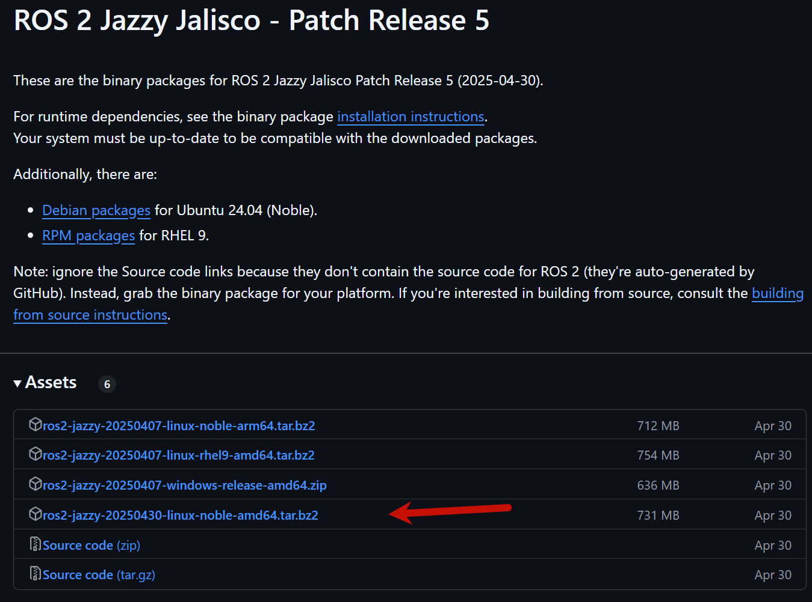

<!DOCTYPE lake>
<h2 data-lake-id="kwdJE" id="kwdJE"><span data-lake-id="uf22ac8a1" id="uf22ac8a1">环境准备</span></h2><p data-lake-id="u53b7710d" id="u53b7710d"><span data-lake-id="ub27eb796" id="ub27eb796" style="color: #DF2A3F">该版本ros2需要ubuntu24.04</span></p><h3 data-lake-id="jP5Xb" id="jP5Xb"><span data-lake-id="u14dffd72" id="u14dffd72">编码检测</span></h3><span class="yuque-card-unsupported">[codeblock]</span><p data-lake-id="u49ffecef" id="u49ffecef"><span data-lake-id="u684efcf1" id="u684efcf1">检查编码环境是否是 </span><code data-lake-id="uf5bd5a67" id="uf5bd5a67"><span data-lake-id="u07cb3b90" id="u07cb3b90">UTF-8</span></code><span data-lake-id="u08e2b631" id="u08e2b631"> 环境，</span><strong><span data-lake-id="ucfd97c9d" id="ucfd97c9d" style="color: #DF2A3F">如果不是则进行以下设置</span></strong><span data-lake-id="ufe4960c2" id="ufe4960c2">:</span></p><span class="yuque-card-unsupported">[codeblock]</span><h3 data-lake-id="Z4SmX" id="Z4SmX"><span data-lake-id="ua2b349c6" id="ua2b349c6">安装必备仓库</span></h3><span class="yuque-card-unsupported">[codeblock]</span><p data-lake-id="ub225aa61" id="ub225aa61"><span data-lake-id="uf1d8e2f2" id="uf1d8e2f2">部分仓库可能出现安装失败问题，需要VPN才能成功。</span></p><span class="yuque-card-unsupported">[codeblock]</span><p data-lake-id="u411f8aa6" id="u411f8aa6"><span data-lake-id="u47e7512f" id="u47e7512f">如果安装不成功，下载：</span></p><p data-lake-id="u10ac3695" id="u10ac3695"><span data-lake-id="ub25090e6" id="ub25090e6">​</span><br/></p><span class="yuque-card-unsupported">[codeblock]</span><p data-lake-id="ua68a85a5" id="ua68a85a5"><br/></p><h3 data-lake-id="z1exq" id="z1exq"><span data-lake-id="u94c14f4c" id="u94c14f4c">安装必备程序</span></h3><span class="yuque-card-unsupported">[codeblock]</span><h2 data-lake-id="Gbn1U" id="Gbn1U"><span data-lake-id="u6f2a5f38" id="u6f2a5f38">ROS2安装</span></h2><h3 data-lake-id="TiUxj" id="TiUxj"><span data-lake-id="uf425c201" id="uf425c201">命令安装（方法一 推荐）</span></h3><span class="yuque-card-unsupported">[codeblock]</span><h4 data-lake-id="KIaBS" id="KIaBS"><span data-lake-id="udfc04abd" id="udfc04abd">环境变量设置</span></h4><span class="yuque-card-unsupported">[codeblock]</span><p data-lake-id="ub8512042" id="ub8512042"><br/></p><h3 data-lake-id="BtYvG" id="BtYvG"><span data-lake-id="ue2c159c4" id="ue2c159c4">资源包安装（方法二）</span></h3><h4 data-lake-id="iBrSv" id="iBrSv"><span data-lake-id="u891fd619" id="u891fd619">下载资源包</span></h4><p data-lake-id="u65b3ba67" id="u65b3ba67"><a data-lake-id="u93a0d421" href="https://github.com/ros2/ros2/releases" id="u93a0d421" rel="noopener noreferrer" target="_blank"><span data-lake-id="u34e2da97" id="u34e2da97">https://github.com/ros2/ros2/releases</span></a></p><p data-lake-id="u3030fe41" id="u3030fe41"></p><h4 data-lake-id="fwDWP" id="fwDWP"><span data-lake-id="ubb3626e3" id="ubb3626e3">解压资源包</span></h4><span class="yuque-card-unsupported">[codeblock]</span><h4 data-lake-id="WxgRr" id="WxgRr"><span data-lake-id="uce802bce" id="uce802bce">安装依赖</span></h4><span class="yuque-card-unsupported">[codeblock]</span><h4 data-lake-id="uGbh0" id="uGbh0"><span data-lake-id="uc6c27784" id="uc6c27784">环境变量设置</span></h4><span class="yuque-card-unsupported">[codeblock]</span><h2 data-lake-id="HM2nu" id="HM2nu"><span data-lake-id="u251341d7" id="u251341d7">安装SSH服务</span></h2><span class="yuque-card-unsupported">[codeblock]</span><span class="yuque-card-unsupported">[codeblock]</span><span class="yuque-card-unsupported">[codeblock]</span><span class="yuque-card-unsupported">[codeblock]</span><p data-lake-id="u7dcd9f0f" id="u7dcd9f0f"><br/></p><h2 data-lake-id="mHNi7" id="mHNi7"><span data-lake-id="ua474c2f7" id="ua474c2f7">问题</span></h2><h3 data-lake-id="d1u4E" id="d1u4E"><span data-lake-id="ubbeb185f" id="ubbeb185f">屏幕无法全屏显示</span></h3><span class="yuque-card-unsupported">[codeblock]</span>